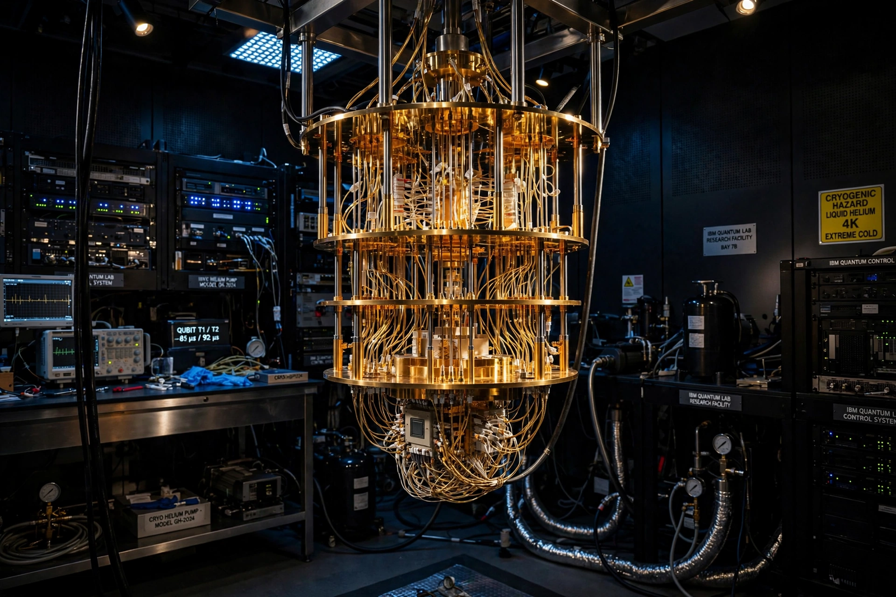

IBM helps clients use hybrid cloud and AI to transform how business gets done — with watsonx, our AI and data platform, at the center.
Explore watsonx
Our portfolio of AI products for building, governing and scaling generative AI across the enterprise.
The mainframe, reimagined for the AI era — security, resilience and transaction scale for the world's banks and airlines.
Build once and deploy anywhere with OpenShift, the enterprise Kubernetes platform from Red Hat.
Utility-scale quantum computing, available on the cloud — 100+ qubit systems and a roadmap toward fault tolerance.
Strategy, experience, technology and operations services, delivered with our ecosystem of partners.
Our open, enterprise-grade family of large language models for code, language and time series.
Research, reports and the annual CEO study: how organisations are adopting AI, modernising infrastructure and rethinking security. Campaign features rotate on the real homepage; this section is recreated representatively.